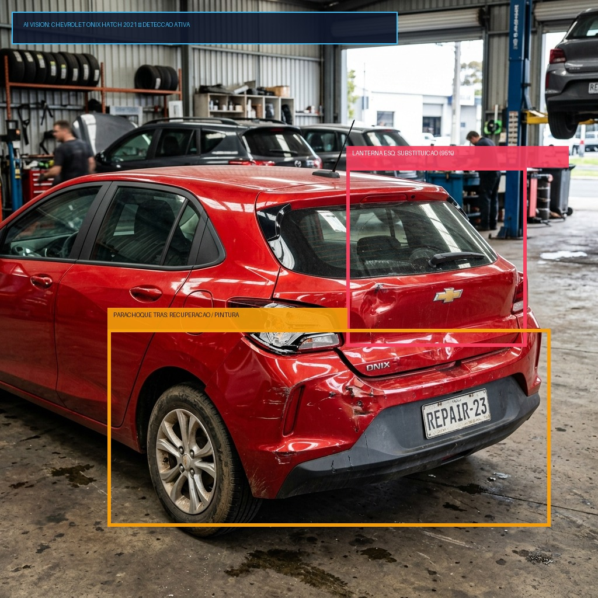
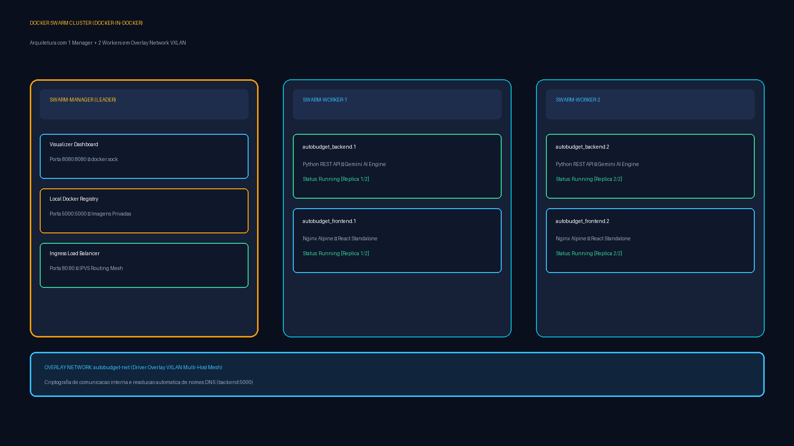
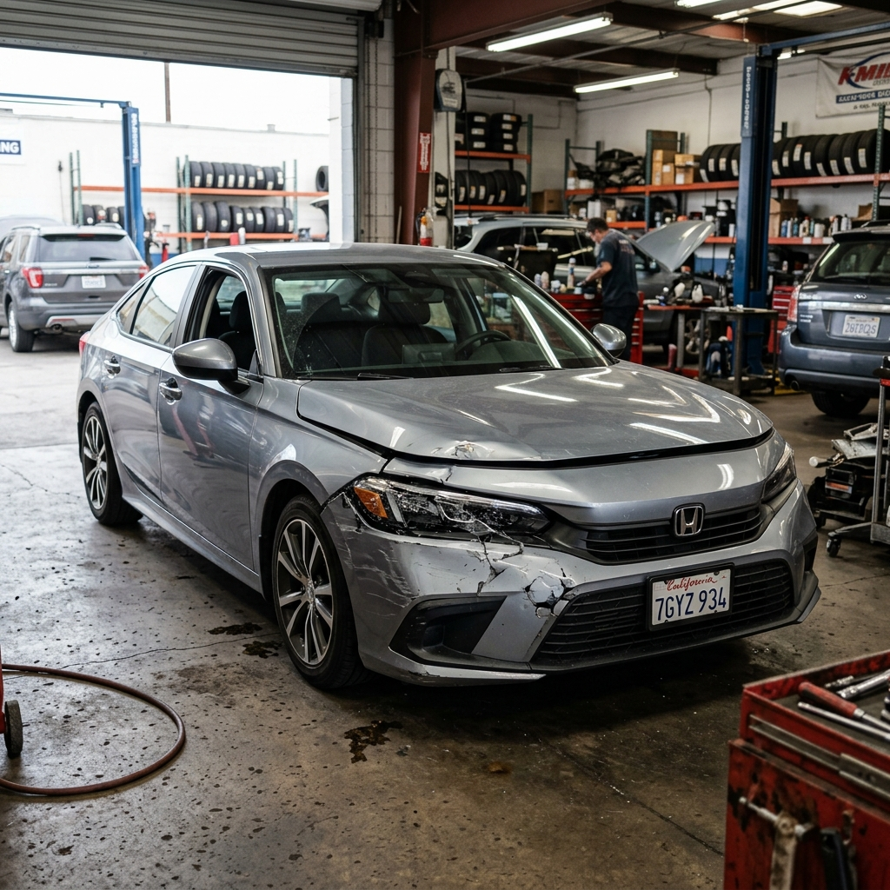
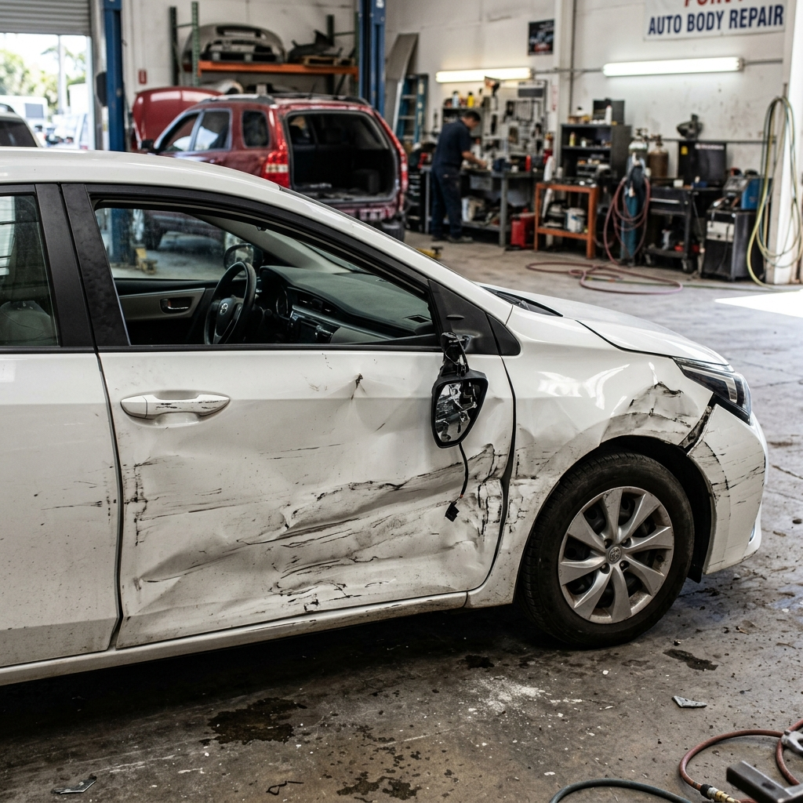
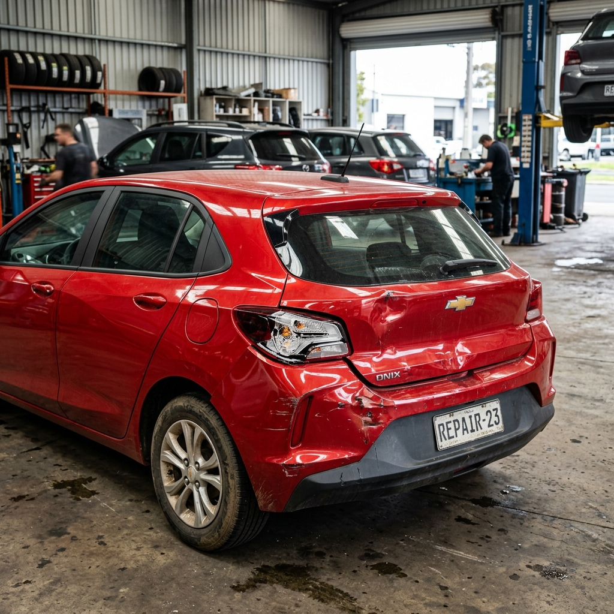

AutoBudget AI
Vistoria Automotiva com Visão Computacional & Cluster Docker Swarm
Detecção automatizada de danos com Google Gemini AI, cruzamento com Tabela FIPE (75% Perda Total) e orquestração resiliente com 1 Manager e 2 Workers.

O Desafio das Vistorias Automotivas
O processo tradicional de regulação de sinistros e orçamentação mecânica sofre com gargalos manuais, assimetria de informações e lentidão operacional.
🎯 Objetivo do Projeto: Criar uma plataforma digital completa que realiza a vistoria em segundos via IA e que seja operada sobre uma infraestrutura corporativa conteinerizada e tolerante a falhas (Docker Swarm).
Como o AutoBudget AI Resolve
Pipeline integrado de visão computacional pericial que analisa fotos reais e gera orçamento auditável em segundos.
Identifica modelo, ano, áreas de colisão e gera caixas delimitadoras coloridas.
Troca obrigatória para óptica/suspensão e recuperação/pintura para lataria.
Peças novas OEM vs usadas certificadas pelo DETRAN (50% off) + alerta de 75% Perda Total.
Separação de Camadas & Microsserviços
Desacoplamento total entre apresentação, roteamento de borda e lógica de negócios.
• Porta 80 exposta
• Serve arquivos estáticos do frontend React
• Compressão Gzip ativa
• Proxy reverso para /api/ -> Backend Python
• Timeouts de 120s para IA e upload de fotos até 50MB
• Porta interna 5000
• Integração com Google Generative Language API
• Base de dados FIPE e precificação de peças
• Cálculo algorítmico de horas de mão de obra
• Threaded Server de alta concorrência
• SPA reativa moderna (Design Dark Mode)
• Upload & preview instantâneo de imagens
• Bounding box overlay visual sobre as fotos
• Modal dinâmico para configuração da chave IA
• Emissão e impressão de Laudo Pericial em PDF
location /api/ {
proxy_pass http://backend:5000/api/;
proxy_connect_timeout 30s; proxy_read_timeout 120s;
client_max_body_size 50m;
}
Cluster Docker Swarm (DinD)
Cluster multi-nó com 1 Manager e 2 Workers em rede Overlay VXLAN, com Visualizer na porta 8080 e Registry local na 5000.

Alta Disponibilidade & Auto-Healing
Configurações avançadas do Docker Compose no modo Swarm para garantir zero downtime.
Tanto o backend quanto o frontend rodam com 2 réplicas ativas distribuídas entre os nós. Se um worker cair, a carga é redirecionada sem queda de serviço.
Atualizações graduais com parallelism: 1 e delay: 10s. O Swarm sobe o container com a versão nova antes de derrubar o antigo, permitindo deploy contínuo.
Qualquer nó do cluster responde pela porta 80. O roteamento de entrada distribui o tráfego balanceado internamente via IPVS do kernel Linux.
deploy:
replicas: 2
restart_policy:
condition: on-failure
update_config:
parallelism: 1
delay: 10s
Registry Privado & Build de Imagens
Distribuição eficiente de imagens no cluster sem dependência de Docker Hub externo.
Criado dentro do nó manager do Swarm. Garante que todos os workers consigam fazer o pull das imagens diretamente pela rede interna com alta velocidade e sem limite de cota de downloads.
docker push 127.0.0.1:5000/autobudget-frontend:latest
Dockerfile.backend: Baseado em python:3.11-slim para tamanho mínimo e inicialização rápida sem compiladores pesados.
Dockerfile.frontend: Baseado em nginx:alpine de ~23MB servindo o bundle standalone, consumindo memória mínima por nó.
Visibilidade em Tempo Real com Visualizer
Acompanhamento gráfico em tempo real da saúde dos nós e da distribuição das tarefas.
Acessível em http://<IP-UBUNTU>:8080. Mapeia em blocos visuais cada container rodando em cada nó do cluster.
O Visualizer possui a constraint node.role == manager para ter acesso exclusivo de leitura ao /var/run/docker.sock.
Se dermos docker pause em um worker durante a apresentação, o Visualizer mostra os containers migrando imediatamente para os outros nós!
• autobudget_frontend: 2/2 réplicas [OK]
• autobudget_visualizer: 1/1 réplica (manager) [OK]
Testes de Carga & Resiliência
Validação com suíte automatizada de testes concorrentes multithreaded (stress_test.py).
✓ PASS Dynamic Gemini Key Verification & Fallback [18ms]
✓ PASS FIPE & Part Quote Market Pricing Engine [41ms]
✓ PASS Multi-Image Vehicle Inspection Payload Handling [85ms]
Veículos Validados na Demonstração
3 cenários reais de colisão incluídos no sistema e validados com IA pericial.

Danos: Farol dianteiro quebrado e grade deformada. Diagnóstico: Substituição óptica.

Danos: Porta e lateral amassada. Diagnóstico: Funilaria e pintura sem troca de chapa.

Danos: Lanterna fraturada e para-choque. Diagnóstico: Cotação DETRAN e teste FIPE.
Diferenciais do AutoBudget AI
Como o projeto atende tanto às exigências acadêmicas de DevOps quanto às necessidades reais de mercado.
• 100% conteinerizado e escalável vertical e horizontalmente
• Cluster Swarm DinD funcional em nó único Ubuntu com overhead mínimo
• Registry local evitando tráfego externo de imagens
• Resiliência comprovada com failover automático de réplicas
• Substitui formulários manuais por visão computacional instantânea
• Transparência pericial com rastreabilidade de peças e Tabela FIPE
• UX profissional com temas refinados, animações e feedback instantâneo
• Total flexibilidade de parametrização de chaves via interface
Obrigado! Perguntas?
O AutoBudget AI demonstra na prática como o Docker Swarm potencializa aplicações modernas impulsionadas por Inteligência Artificial.
github.com/KaykyMatos845/
auto-repair-budget-agent
1 Manager + 2 Workers ativos
5 Réplicas saudáveis
App: porta 80
Visualizer: porta 8080